Minecraft
Infinite procedural worlds. Build anything. Survive everything.
Review
Minecraft's genius lies in its simplicity: a world entirely made of blocks, a suite of basic tools, and no instructions whatsoever. What emerges from this deceptively humble foundation is one of the most creative and enduring games ever made. The survival loop — gather resources, craft tools, build shelter, explore deeper — is deeply intuitive, and the transition from punching trees to constructing elaborate fortresses creates an organic sense of progression that remains satisfying across hundreds of hours.
The game's procedural generation engine produces worlds of staggering variety, from vast ocean monuments to canyon-riven badlands to mushroom islands and deep slate cave systems that descend into terrifying darkness. Each biome has its own ecosystem, resources, and hazards. The Nether and the End dimensions expand the world vertically and tonally — moving from the overworld's pastoral familiarity to genuinely alien environments that reward deep exploration.
With over 300 million copies sold across all platforms, Minecraft is the best-selling game in history, and for good reason. The Java Edition modding community has produced extraordinary content over 15 years — entire game genres, graphical overhauls, adventure maps, and technical redstone computers that would astonish a real engineer. Whether you're a five-year-old building a house or a veteran redstone engineer constructing a working CPU, Minecraft meets you where you are.
Strengths and Limits
- Infinite, procedurally generated worlds with extraordinary variety
- Creative freedom is genuinely unmatched in any other game
- Java Edition modding community is one of the richest in gaming
- Excellent for all ages — scales perfectly from casual to deeply technical
- Constant, high-quality official updates with no paid DLC for core content
- Runs on almost any hardware, including decade-old computers
- Java Edition performance can be inconsistent even on modern hardware
- Java and Bedrock editions have persistent parity gaps
- No hand-holding — complete newcomers can feel lost without external resources
- Vanilla combat system is still divisive years after its overhaul
Reader Fit
This review is written around fit: who should play it, what kind of session it rewards, and what friction might make it wrong for another reader. A high grade does not mean every player should buy it immediately. It means the game has a clear identity, a strong reason to exist, and enough craft to justify attention from the right audience.
Official Store Links
Editorial Method
This page is part of a cleaned Envizion publishing set. It is written for a reader who wants a practical decision, not a search-engine doorway. The page uses an original local SVG cover made inside this project, summarizes the strongest points directly, and keeps the limits visible. Where the topic depends on changing stores, patches, follower counts, or platform behavior, the page treats those details as estimates and points readers toward checking the current official profile or store before making a final decision.
The goal for this game review page is to add enough context that a visitor can leave with a useful conclusion. It avoids imported stock images, copied articles, and placeholder entries. If a note is only a short draft or generated filler, it is kept out of the sitemap until it has a real editorial reason to exist.